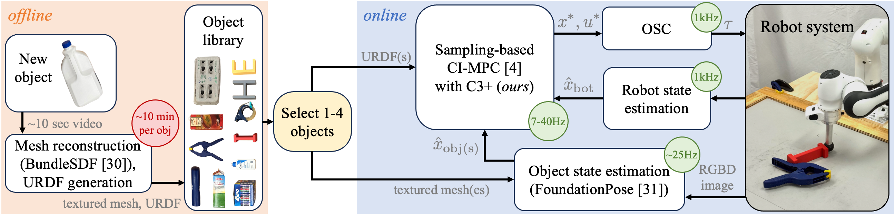
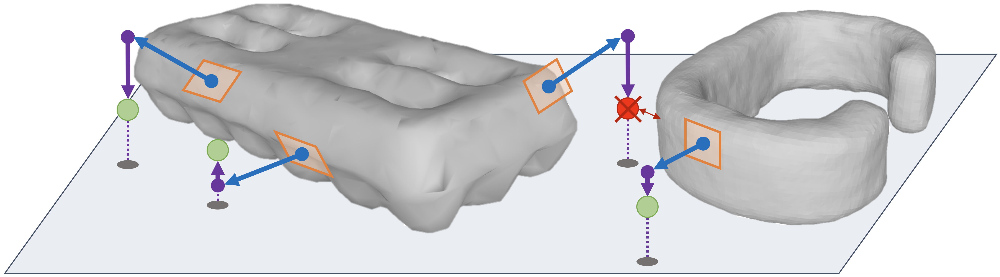

Push Anything: Single- and Multi-Object Pushing From First Sight with Contact-Implicit MPC
TL;DR: Our enhanced contact-implicit MPC (CI-MPC) algorithm, C3+, enables contact-rich manipulation of single or multiple diverse objects modeled with unprecedented numbers of contact pairs.
Overview Video
TODOAbstract
Non-prehensile manipulation of diverse objects remains a core challenge in robotics, driven by unknown physical properties and the complexity of contact-rich interactions. Recent advances in contact-implicit model predictive control (CI-MPC), with contact reasoning embedded within the trajectory optimization, have shown promise in tackling the task efficiently and robustly, yet demonstrations have been limited to narrowly-curated examples. In this work, we showcase the broader capabilities of CI-MPC through precise planar pushing tasks over a wide range of object geometries, including multi-object domains. These scenarios demand reasoning over numerous inter-object and object-environment contacts to strategically manipulate and de-clutter the environment, challenges that were intractable for prior CI-MPC methods. To achieve this, we introduce Consensus Complementarity Control Plus (C3+), an enhanced CI-MPC algorithm integrated into a complete pipeline spanning object scanning, mesh reconstruction, and hardware execution. Compared to its predecessor C3 , C3+ achieves substantially faster solve times, enabling real-time performance even in multi-object pushing tasks. On hardware, our system achieves overall 98% success rate across 33 objects, reaching pose goals within tight tolerances. The average time-to-goal is approximately 0.5, 1.6, 3.2, and 5.3 minutes for 1-, 2-, 3-, and 4-object tasks, respectively.
Uncut Single Object Manipulation Videos
Tight tolerances: 2cm, 0.1rad (5.7 degrees)
For our 3D jack example, we aggregate time-to-goal statistics across 4 continuous experiments containing 21, 16, 15, and 15 consecutive SE(3) goals. The above uncut videos depict these full-length experiments.
Uncut Two-Object Manipulation Videos
Tight tolerances: 2cm, 0.1rad (5.7 degrees)
For our planar push-T example, we aggregate time-to-goal statistics across 4 continuous experiments containing 56, 20, 20, and 10 consecutive SE(2) goals. The above uncut videos depict these full-length experiments.
Uncut Three-Object Manipulation Videos
Tight tolerances: 2cm, 0.1rad (5.7 degrees)
For our planar push-T example, we aggregate time-to-goal statistics across 4 continuous experiments containing 56, 20, 20, and 10 consecutive SE(2) goals. The above uncut videos depict these full-length experiments.
Uncut Four-Object Manipulation Videos
Tight tolerances: 2cm, 0.1rad (5.7 degrees)
For our planar push-T example, we aggregate time-to-goal statistics across 4 continuous experiments containing 56, 20, 20, and 10 consecutive SE(2) goals. The above uncut videos depict these full-length experiments.
System Diagram

We present the Push Anything framework (above), a
pipeline integrating object perception with a novel
controller. Our framework operates in two phases. In the
offline phase, we build an object library by scanning
objects to generate meshes (via BundleSDF) and
URDFs, assuming same mass and inertia. In the online phase,
our controller uses robot and object state estimates (the
latter using
FoundationPose) to compute end effector trajectories.
Following the approach in Yang
and Posa, these trajectories are tracked by a low-level
operational space controller (OSC).
TODO update text.
Our controller is implemented in C++ within the
Drake systems framework.
Our setup uses two computers: a computer with
a 13th generation Intel Core i9-13900KF with 32 threads (for
our sampling-based CI-MPC) and an NVIDIA GeForce RTX 4090
GPU (for FoundationPose), and an Intel i7-8700K processor
(for our OSC and robot drivers) equipped with a real-time
kernel for communicating with the Franka. Inter-computer
communication occurs over
LCM.
C3+ Algorithm
TODO text to be replaced. Many CI-MPC methods use local models to approximate the dynamics in a real-time-capable manner. One example is Consensus Complementarity Control (C3), which represents the multi-contact dynamics as a linear complementarity system (LCS). An LCS captures the hybrid aspect of contact-rich dynamics but is fundamentally local.
Sampling Strategy: Applicable to Any Mesh
We pre-process object meshes by storing body-frame face locations, areas, and normal vectors. Given world-frame object pose estimates, we generate a candidate end effector location by first performing several random sampling steps in series: 1) select an object uniformly, 2) select a stored face of this object weighted by area, and 3) sample a point lying on this face. This surface point is then projected a fixed distance along the face's outward normal vector then projected to a fixed world height (see below). We reject samples which, even after projection away from one face, are too close to any of the objects. This can occur due to object non-convexity, the presence of multiple objects, or the selection of a face whose normal is too vertical. We repeat this process until the desired number of end effector candidates is obtained.
Above is a visualization of the sampling strategy for end effector locations. The gray plane indicates the ground, and the orange planes represent local tangent planes to the mesh surfaces. Blue arrows project surface samples outwards from the mesh along the face normals, then purple arrows project those to a fixed height in the world, generating candidate samples (green dots). Samples located too close to object surfaces (e.g. red dot) are discarded.
Numerical Results
| Mean ± σ [Min, Max] |
Time to Goal (s) within Pose Tolerances | |
|---|---|---|
| Tight: 2cm, 0.1 rad | Loose: 5cm, 0.4 rad | |
| Hardware SE(3) Jack (Ours) 67 trials |
109.20 ± 64.24 [17.40, 292.07] |
84.86 ± 60.54 [5.20, 257.74] |
| Simulation SE(3) Jack (Ours) 26 trials |
49.31 ± 30.35 [9.71, 124.70] |
33.84 ± 26.39 [7.97, 97.82] |
| Simulation SE(3) Jack (MJPC) 34 trials |
107.91 ± 112.38 [3.30, 567.69] |
68.00 ± 83.50 [1.51, 343.79] |
| Hardware SE(2) Push-T (Ours) 106 trials |
30.45 ± 13.11 [7.50, 79.43] |
17.43 ± 7.59 [3.86, 42.00] |
TODO replace table and text. Can include Table II and Figure 8 from manuscript.
C3 Timing Comparison
TODO content to be replaced. Can include Table I from manuscript. Due to the inability to escape geometric local minima, C3 fails essentially 100% of the time on our tasks and thus is not compared. We compare with MuJoCo MPC (MJPC) with predictive sampling on the 3D jack task in simulation.
More text.
Acknowledgments
TODO add more here if necessary. This work was supported by an NSF CAREER Award under Grant No. FRR-2238480 and the RAI Institute.
TEMPORARY: Remove when done
TODO list:
[ ] Add in/change all "TODO" items
[ ] Remove old assets when push anything assets are added:
static/images/carousel_jack,
static/images/carousel_t, mjpc_cdf_concise.png
[ ] Replace old assets: favicon.png, meta.png
Citation
If you find this work useful, please consider citing: (bibtex)
@article{bui2025push,
title={Push Anything: Single- and Multi-Object Pushing From First Sight with Contact-Implicit MPC},
author={Hien Bui* and Yufeiyang Gao* and Haoran Yang* and Eric Cui and Siddhant Mody and Brian Acosta and Thomas Stephen Felix and Bibit Bianchini and Michael Posa},
year={2025},
website={https://push-anything.github.io/}
}